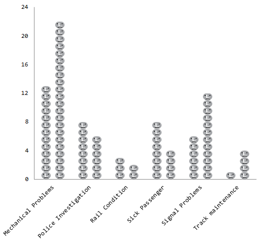
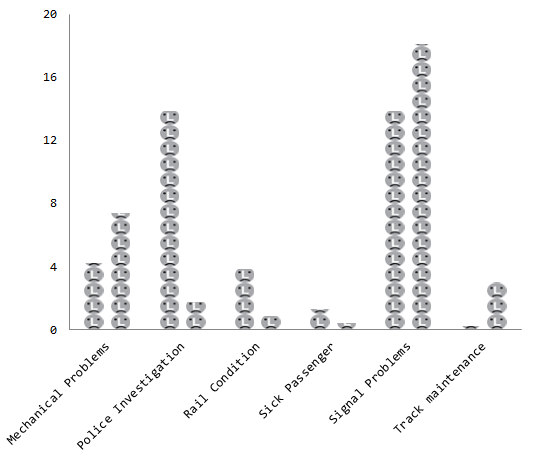
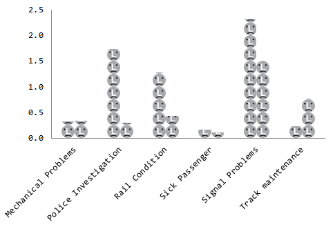

What's going on with the L train?
The L train wasn't the only subway line in New York to be affected by Hurricane Sandy, but it might have been the most whined about. L train riders - especially 20-somethings living in the Williamsburg neighborhood of Brooklyn - have a habit of following and critiquing the L's every defect online, to the point where it's become the most written about subway line on the internet. So after Hurricane Sandy hit the boroughs last fall, L train riders flocked to social media to bemoan the worsening predicament of living off the L. But how has the train faired since? WNYC blogger Jim O'Grady seems to think L train riders are doomed with bad service for quite some time. But recently released data from the Straphanger's Campaign website seems to tell a different story.
Not again!?!
Number of delays Jan-Mar for 2012 and 2013, broken down by reason.
When you compare the first three months of 2013 (when the L train would have experienced post-hurricane delays) with the same time period in 2012 it's clear Hurricane Sandy did have a lingering effect on L train service. The number of mechanical problems and signal problems went up significantly after the storm, which is not surprising. Track maintenance also went up in the first three months of 2013. Again, no real surprise there.
But how much of our precious time did all these delays waste?
Amount of time for all delays Jan-Mar for 2012 and 2013, broken down by reason
According to the straphanger data, L train riders were delayed nearly 8 hours for track maintenance in the first three months of 2013 - almost twice as long as they were in 2012. But the train's Achilles heel was signal problems, which held riders up for a combined 18 hours. But if there's only one question you ask yourself when you hear there's a problem on the L...
How long is this going to take!?!
Average time of delay, Jan-Mar for 2012 and 2013, broken down by reason
Here's where things get interesting. Even though the L train was delayed twice as much in 2013 as it was in 2012 by mechanical problems, each individual delay lasted about the same amount of time, and the wait for a signal problem was actually shorter this year than it was last year.
It may have something to do with the fact that the MTA has promised to improve service on the L line, which in the past few years has been laboring under the weight of more riders like the waistband of a pair of jeans on Thanksgiving. If it weren't for Hurricane Sandy, who knows whether L train riders would have been able to appreciate the MTA's effort. On the bright side it seems like improvements on the L train actually diminished the storm's impact on riders. And if no freaky weather events hit the city this year, then those improvements should really be felt by 2014. Let's cross our tattooed fingers and hope that's the case.